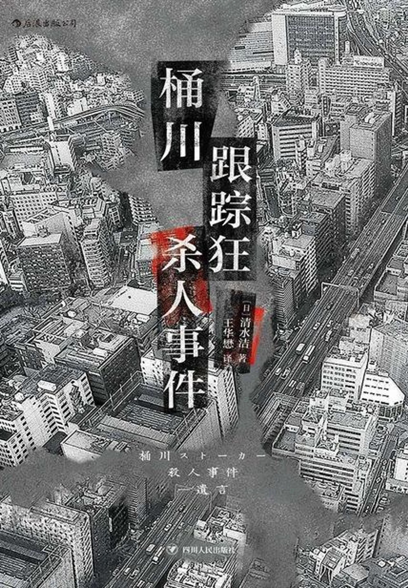

《桶川跟踪狂杀人事件》书评
前言
“我的女儿被杀害了三次。”
第一次是罪犯
第二次是怠于调查的警方
第三次是伤害她名誉的媒体
*这是一起真实的案件，1999年10月26日中午12点50分，一名全身是血的女大学生倒在了埼玉县JR桶川车站的外面。几分钟之前，一名年轻男子用匕首对着她连刺数刀后逃走，女孩在送往医院的路上，因为失血过多不幸身亡。而《桶川跟踪狂杀人事件》，日本著名调查记者清水洁对“桶川跟踪狂杀人案”调查的全记录。
前男友跟踪骚扰、买凶杀害 + 警方坐视不理 + 媒体污名化报道，无辜的受害者被杀死了三次，而记者清水洁*在调查这一事件的过程中，依从受害者生前留下的“遗言”的引导，多方走访查证，在警方轻视线索、调查不力的情况下，以记者的身份找到了实行犯，进而揭露了警方对受害者生前报案的漠视、敷衍，以及案发后试图抹黑受害者、掩盖渎职事实的行为。
书评
这是一本优缺点并存的纪实文学。
优点：
- 作为纪实文学，该书以调查报道第一人称的视角，展示整个调查过程。同时在书中数不胜数的关于内心活动的描写，这能让读者更好的了解到了调查记者的工作性质、内容、难处与内心真实感受的，也让读者更能身临其境感受到案件。
- 书中除了对案件记录外，也不断的用自问反思深入社会问题。通过展示案件的多面性，揭示诸多社会问题，作为纪实文学很了不起。
缺点
- 书的文笔一般，作为一个记者写的一本纪实文学，文风应当更干脆利落，没想到全书单纯从文字表达看来却极为平白。这里的文笔并不是说要优美的、高级的遣词造句，而是要清晰利落地击中要点。
- 作为纪实文学，个人觉得主观意味还是有一点点过重，书中有多处个人情绪的宣泄（如对其他主流媒体的暗讽），我觉得也是纪实文学的不应该出现太多的东西。在社会类纪实报道中，最重视客观事实，可以将客观的事实展示出来（如警察和主流媒体的态度行为），而在后加上过多的主观臆断实属有违纪实文学的性质。
如果你是想看跌宕起伏的案件，悬疑烧脑的推理故事的话，可以选择换一本书了。因为无论从哪个角度说来，这本书里所写的案件本身都相对简单，从作案动机、作案方法、破案过程、追凶过程，都谈不上悬疑。因为这只是一本2000年前后纸刊摄影记者的记者手记。
想法与感悟
记录个人的思考
那一天，惨案发生了。但是，为什么？
读完整本手记，我首先感觉到的不是悲伤不是愤怒，而是一种怅然若失。为什么大家都死了……
诗织和和人都根本没有必要死。为什么年轻的两人，非得像这样死于非命不可？怎么会演变成这样？是什么让两人的人生结束了？……
在真相大白，凶手自杀被发现，主流媒体也开始将县警的过错能够被公之于世，开始大喊“是警方对诗织见死不救”的。这是作者期盼的结果，但是，好像有什么不对劲
是什么不对劲呢？悲剧发生的那一刻起伤害就永不磨灭了，也许对其他人来说每揭露一个公权力的丑闻，意味着更多的人可以得到有效的保护，然而为此牺牲的人已经永远看不到新升的太阳，为何一定要以鲜血和人命作为代价呢？
受害者甚至凶手都不必死，但是，为什么？我觉得这是我们应该思考的问题
是什么推动他们向前呢？
作为三流媒体记者的清水洁，是如何坚持探寻真相的呢？
一定就是在这一瞬间，我的心中有什么改变了……
是什么改变了呢？身为作者的有责任心和正义感？还是什么别的？记者，或者说，纪实工作者，本质上是出于正义感，才会想要将一些事实陈述给大众听。然而很多时候记者不需要正义感，只需要理性，准确传达事实才是记者的责任，更何况我们常常因为各种原因需要去迎合受众，插入吸引流量的东西。长时间的工作麻痹看似磨灭了这种“正义感”，不过，我相信，它会一直存在。
“如果我被人杀了，就是小松杀的。”留下这句话死去的诗织、流着泪告诉我这件事的岛田和阳子、甘冒危险协助我的特殊行业人士，他们为什么要将情报传递出来？
我觉得是因为 他们身陷恐惧 。“下一个会不会是我？”相同立场才会有相同的恐惧，但责任和道德应该敦促不同立场的人有基本的共情力。
与其说是采访者，我更成了信息提供者、命案当事人。就像那天在KTV包厢里，我从岛田及阳子手中接到了“什么”那样，这次轮到我把那个“什么”托付给别人了。
这个“什么”的传递，是真相的传递，亦是正义的力量的传递，就像是火种的延续，后继的人们相互传递以获取温暖。
*母亲京子女士在宣判当天穿上诗织的衣服，戴上那只手表出席。为了女儿的名誉而战的两人，说他们甚至怀有无法挽救女儿生命的忏悔情绪，但他们坚强的源头，也是诗织所留下来的许多事物。像是她留下来的话、遗书以及遗物。*物品不会说话。
但也能比任何话语更雄辩滔滔。
物品可以诉说真实，也能用来撒谎。
诗织的命案发生后刚好第三年的秋天，我的女儿过世了。一场突来的事故结束了她的一生。我在工作中接到消息，甚至无法见死去的她一面。
直到那天以前，我都不知道诞生在世上的女儿，原来只有十四年的光阴，就这样任由每一天过去。请允许我这个再也无法为女儿做任何事的没出息老爸，在最后写下小女的名字。
我为小女取的名字、往后再也无法呼唤的名字，叫作清水梓。
世上是有无可奈何的事的，
而死亡，就是再也见不到那个人。
共情能力其实是比起责任感和良知还要更重要的、人的素质。整本书在讲的无非也就是这样：如果每个人都能对他人的遭遇有所动容和帮助，悲剧也许就不会发生。
最后，比什么都更重要的是，愿诗织小姐和梓小姐在天之灵能够安息。
@2023/03/27